File: 000690.gt.txt (if the image is defective, simply delete all Arabic text and the line will be excluded)
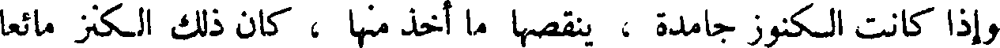
وإذا كانت الكنوز جامدة ، ينقصها ما أخذ منها ، كان ذلك الكنز مائعا
File: 000691.gt.txt (if the image is defective, simply delete all Arabic text and the line will be excluded)
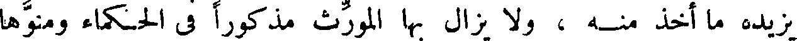
يزيده ما أخذ منه ، ولا يزال بها المورث مذكورا في الحكماء ومنوها
File: 000692.gt.txt (if the image is defective, simply delete all Arabic text and the line will be excluded)
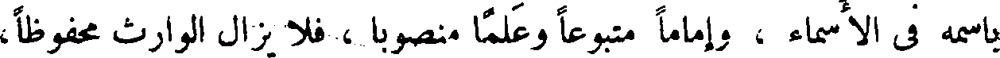
باسمه في الأسماء ، وإماما متبوعا وعلما منصوبا ، فلا يزال الوارث محفوظا،
File: 000693.gt.txt (if the image is defective, simply delete all Arabic text and the line will be excluded)
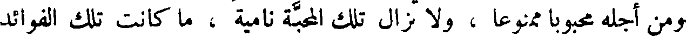
ومن أجله محبوبا ممنوعا ، ولا تزال تلك المحبة نامية ، ما كانت تلك الفوائد
File: 000694.gt.txt (if the image is defective, simply delete all Arabic text and the line will be excluded)
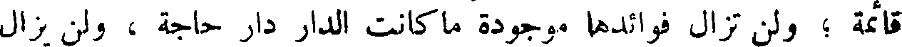
قائمة ؛ ولن تزال فوائدها موجودة ما كانت الدار دار حاجة ، ولن يزال
File: 000695.gt.txt (if the image is defective, simply delete all Arabic text and the line will be excluded)
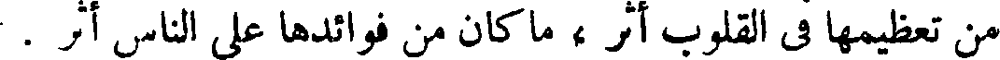
من تعظيمها في القلوب أثر ، ما كان من فوائدها على الناس أثر .
File: 000696.gt.txt (if the image is defective, simply delete all Arabic text and the line will be excluded)
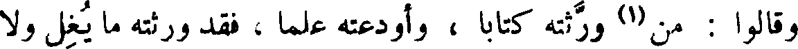
وقالوا : من(1) ورثته كتابا ، وأودعته علما ، فقد ورثته ما يغل ولا
File: 000697.gt.txt (if the image is defective, simply delete all Arabic text and the line will be excluded)
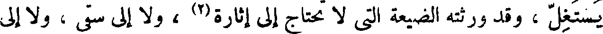
يستغل ، وقد ورثته الضيعة التي لا تحتاج إلى إثارة(2) ، ولا إلى سقي ، ولا إلى
File: 000698.gt.txt (if the image is defective, simply delete all Arabic text and the line will be excluded)
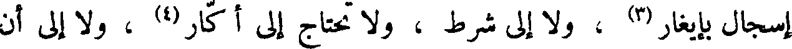
إسجال بإيغار (3) ، ولا إلى شرط ، ولا تحتاج إلى أكار (4) ، ولا إلى أن
File: 000699.gt.txt (if the image is defective, simply delete all Arabic text and the line will be excluded)
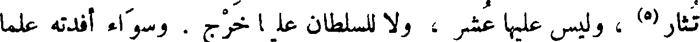
تثار (5) ، وليس عليها عشر ، ولا للسلطان عليها خرج . وسواء أفدته علما
File: 000700.gt.txt (if the image is defective, simply delete all Arabic text and the line will be excluded)
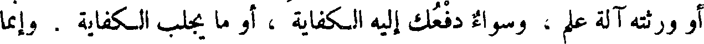
أو ورثته آلة علم ، وسواء دفعك إليه الكفاية ، أو ما يجلب الكفاية . وإنما
File: 000701.gt.txt (if the image is defective, simply delete all Arabic text and the line will be excluded)
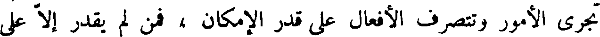
تجري الأمور وتتصرف الأفعال على قدر الإمكان ، فمن لم يقدر إلا على
File: 000702.gt.txt (if the image is defective, simply delete all Arabic text and the line will be excluded)
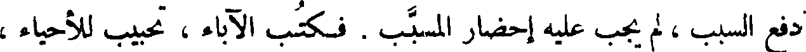
دفع السبب ، ولم يجب عليه إحضار المسبب . فكتب الآباء ، تحبيب للأحياء ،
File: 000703.gt.txt (if the image is defective, simply delete all Arabic text and the line will be excluded)
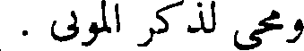
ومحي لذكر الموتى .
File: 000704.gt.txt (if the image is defective, simply delete all Arabic text and the line will be excluded)
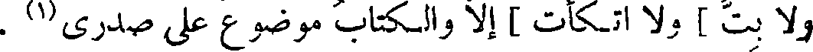
ولا بت ] ولا اتكأت ] إلا والكتاب موضوع على صدري(1) .
File: 000705.gt.txt (if the image is defective, simply delete all Arabic text and the line will be excluded)
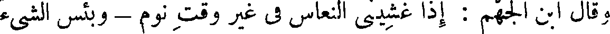
وقال ابن الجهم : إذا غشيني النعاس في غير وقت نوم - وبئس الشيء
File: 000706.gt.txt (if the image is defective, simply delete all Arabic text and the line will be excluded)
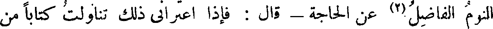
النوم الفاضل(2) عن الحاجة - قال : فإذا اعتراني ذلك تناولت كتابا من
File: 000707.gt.txt (if the image is defective, simply delete all Arabic text and the line will be excluded)
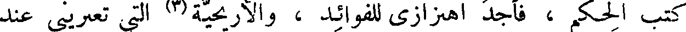
كتب الحكم ، فأجد اهتزازي للفوائد ، والأريحية(3) التي تعتريني عند
File: 000708.gt.txt (if the image is defective, simply delete all Arabic text and the line will be excluded)

الظفر ببعض الحاجة ، والذي يغشى قلبي من سرور الاستبانة وعز التبيين
File: 000709.gt.txt (if the image is defective, simply delete all Arabic text and the line will be excluded)

أشد إيقاظا من نهيق الحمير وهدة الهدم .
File: 000710.gt.txt (if the image is defective, simply delete all Arabic text and the line will be excluded)
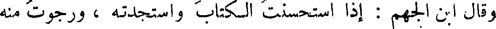
وقال ابن الجهم : إذا استحسنت الكتاب واستجدته ، ورجوت منه
File: 000711.gt.txt (if the image is defective, simply delete all Arabic text and the line will be excluded)
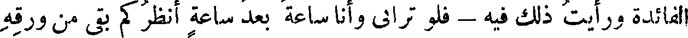
الفائدة ورأيت ذلك فيه - فلو تراني وأنا ساعة بعد ساعة أنظر كم بقي من ورقه
File: 000712.gt.txt (if the image is defective, simply delete all Arabic text and the line will be excluded)
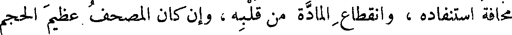
مخافة استنفاده ، وانقطاع المادة من قلبه ، وإن كان المصحف عظيم الحجم
File: 000713.gt.txt (if the image is defective, simply delete all Arabic text and the line will be excluded)
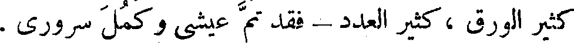
كثير الورق ، كثير العدد - فقد تم عيشي وكمل سروري .
File: 000714.gt.txt (if the image is defective, simply delete all Arabic text and the line will be excluded)
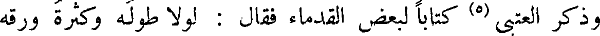
وذكر العتبي (5) كتابا لبعض القدماء فقال : لولا طوله وكثرة ورقه
File: 000715.gt.txt (if the image is defective, simply delete all Arabic text and the line will be excluded)
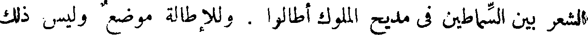
الشعر بين السماطين في مديح الملوك أطالوا . وللإطالة موضع وليس ذلك
File: 000716.gt.txt (if the image is defective, simply delete all Arabic text and the line will be excluded)
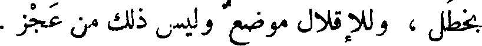
بخطل ، وللإقلال موضع وليس ذلك من عجز .
File: 000717.gt.txt (if the image is defective, simply delete all Arabic text and the line will be excluded)
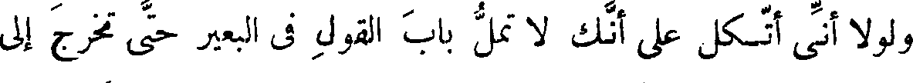
ولولا أني أتكل على أنك لا تمل باب القول في البعير حتى تخرج إلى
File: 000718.gt.txt (if the image is defective, simply delete all Arabic text and the line will be excluded)
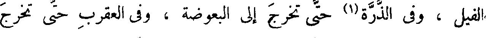
الفيل ، وفي الذرة(1) حتى تخرج إلى البعوضة ، وفي العقرب حتى تخرج
File: 000719.gt.txt (if the image is defective, simply delete all Arabic text and the line will be excluded)
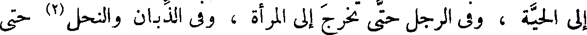
إلى الحية ، وفي الرجل حتى تخرج إلى المرأة ، وفي الذبان والنحل (2) حتى
To Save: `Ctrl+s`, make sure to choose `Webpage, complete`!